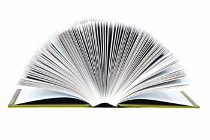

Better World Books is a social venture started by three college students in 2001 to promote literacy worldwide. The company collects used books via book drives and donations, then sends them to nonprofit literacy groups or sells them online to provide income for their nonprofit literacy partners, including Books for Africa (sub-Saharan Africa), Room to Read (South Asia and Africa), the National Center for Family Literacy (United States), and the World Education and Development Fund (Latin America).
Partnered with more than 1,600 colleges and universities and 900 libraries, Better World Books has raised $2.75 million for more than 80 literacy and education nonprofit organizations since 2003 - and sent more than 900,000 books to their nonprofit partners. And no book goes to waste - every book that can’t be sold or donated is recycled. Better World Books estimates that they’ve kept more than 6,450 tons of books out of landfills.
You can save money (and help a good cause!) by purchasing new or used books at their online store, or buy a gift certificate for your favorite student or bibliophile. You can shop by title, by category or even by zip code - browse their Online Sidewalk Sale to purchase from (and thereby support) local organizations. The company has partnered with CarbonFund.org to ensure that every shipment - for one book or 1,000 - is carbon-neutral. Shipping within the United States is free, and international shipments are a mere $2.97 per book. Learn more at the Better World Books Web site.
|
 ISTOCKPHOTO Help Better World Books promote literacy worldwide. |
|
|